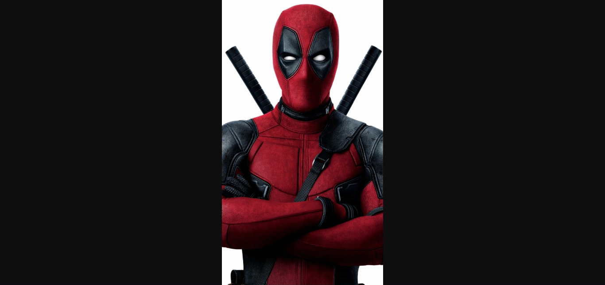
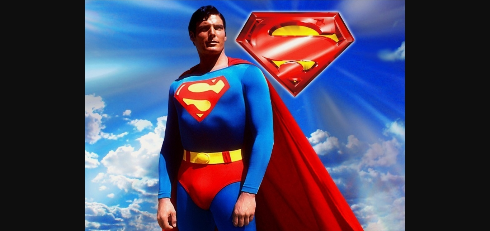
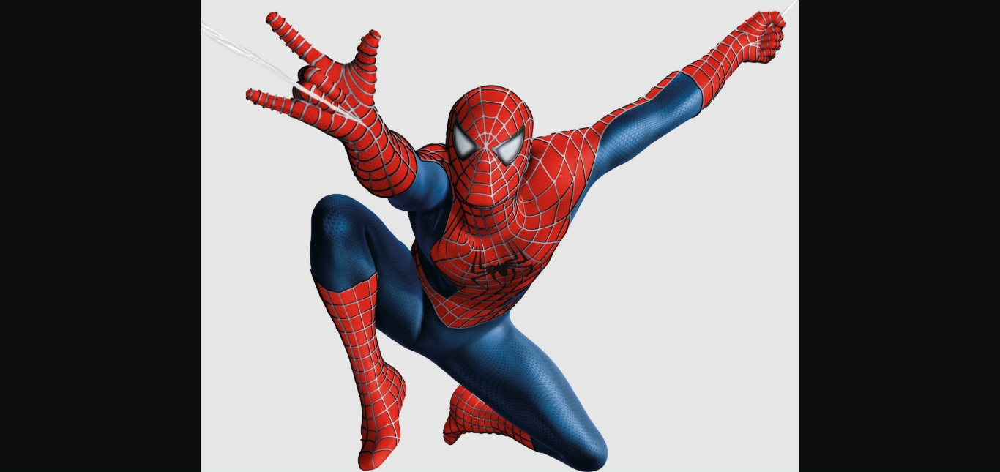

<!DOCTYPE html>
<html lang="en">
<head>
    <meta charset="UTF-8">
    <meta name="viewport" content="width=device-width, initial-scale=1.0">
    <title>My Website | homepage</title>
</head>
<body>
    
</body>
</html>
<ul>
     <li> <a href="index.html">Home</a></li>
     <li> <a href="project.html">Projects</a></li>
     <li> <a href="education.html">Education</a></li>
     <li> <a href="contact.html">contacts</a></li>

</ul>
<hr>
    <h1>Hi, I Am Fuad   👋  </h1>
    <p> A Web Developer. I Am 29 Years old. I love Building Complex Things For People. Very Active On Twitter</p>
    
    <hr>
    <h2>My Favorite Movies</h2>
    <ol>
        <li>Deadpool</li>
        <p>Deadpool is a 2016 American superhero film directed by Tim Miller, in his directorial debut, and written by Rhett Reese and Paul Wernick. Based on the Marvel Comics character of the same name and distributed by 20th Century Fox, it is a spin-off of the X-Men film series and its overall eighth installment. The film stars Ryan Reynolds in the title role, alongside Morena Baccarin, Ed Skrein, T</p></p>
        
        

        <li>Superman</li>
        <p>Superman: Man of Tomorrow is a 2020 American animated superhero film based on the DC Comics character Superman. Produced by Warner Bros. Animation, and DC Entertainment, and distributed by Warner Bros. Home Entertainment, it is the first installment in the DC Animated Movie Universe's second phase, and the sixteenth overall. The film is directed by Chris Palmer, and written by Tim Sheridan, and stars Darren Criss and Zachary Quinto. The film depicts the early</p></p>
        


        <li>Spiderman</li>
        <p>Spider-Man is a 2002 American superhero film based on the Marvel Comics character Spider-Man. Directed by Sam Raimi from a screenplay by David Koepp, it is the first installment in Raimi's Spider-Man trilogy. The film stars Tobey Maguire, Willem Dafoe, Kirsten Dunst, James Franco, Cliff Robertson, and Rosemary Harris. The story follows timid teenager Peter Parker, who ga</p></p>
        

    </ol>
